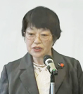
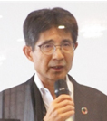
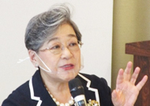

10月16日（金）、「自ら考え行動する消費者になろう～誰ひとり取り残さない持続可能な社会を目指して～」を大会スローガンに、第56回埼玉県消費者大会を開催しました。
開会に際し、実行委員会を代表して川上豊子実行委員長のあいさつがあり、コロナ禍での実行委員会の話し合いにより、午後の分科会は開催せず、さらに一般参加はなしにし、大会全体をYouTubeライブ配信として、より多くのみなさんに見ていただけるようにしたことなど報告しました。
続いて来賓の大野元裕知事より、新しい生活様式のもと、感染予防対策を徹底しながら消費者大会を開催していることに対し、感謝のことばをいただきました。また、埼玉県でも消費者被害が増加している中、消費者被害防止サポーターの育成や消費者安全確保地域協議会の設置をすすめ、高齢者への見守り力向上と未成年者への心くばりなどへの協力を呼びかけられました。
|  |  |  | |
| 実行委員長 あいさつ |
大野元裕 埼玉県知事 |
基調報告と 埼玉県への要請 |
荻原博子さんによる 記念講演 |
次に、実行委員会で論議を重ねて確認した「基調報告」のポイントと「埼玉県への要請書」の主要な内容について吉川尚彦事務局長から説明しました。
記念講演では、経済ジャーナリストの荻原博子さんに「新型コロナウイルス感染症と向き合って ～どう変わる、わたしたちのくらし～」と題してお話しいただきました。2000万円問題で寿命を縮めるのではなく、老後の不安を年金や医療、介護などについて分析して考えることが大切で、コロナ禍でも明るい気持ちでいること、不安があったら前向きに考えることが大切と締めくくられました。